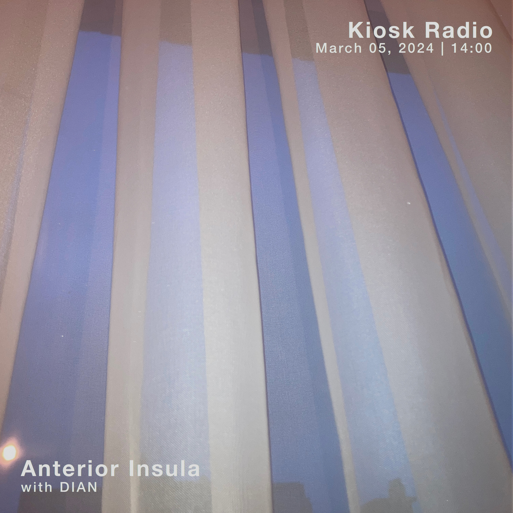

listen live every first Tuesday of the month at Kiosk Radio Brussels between 2 and 3pm
Latest show:
Tuesday, 05 March, 2024
@KIOSK RADIO with DIAN

- Ruth White - The Clock [Flowers of Evil]
- Coil - Sara Dale’s Sensual Massage VII
- Voice Actor - Beautiful Burglar
- Henri Texier - Quand tout s’arrête
- Coil - Sara Dale’s Sensual Massage VI
- Pari Zanganeh - Ghad Boland
- Ruth White - Evening Harmony [Flowers of Evil]
- Zwarte Madonna (RIP DRARI) - Side A
- Thilges - Neba_'h
- François J. Bonnet & Stephen O'Malley - Rainbows
- Big Blood - Creepin’ Crazy Time
- Vincent Gallo - I Wrote This Song for the Girl Paris Hilton
- Erik Belgum - Dick Tracy All Over His Body
- kNN - Il Materiale Ovvero L'oggetto
- Barış Manço - Lambaya Püf De
- Marta de Pascalis - Argentea
- Hans Otte - Part 8
- Bonnie Beecher - Come Wander with Me
- Aphex Twin - Grass